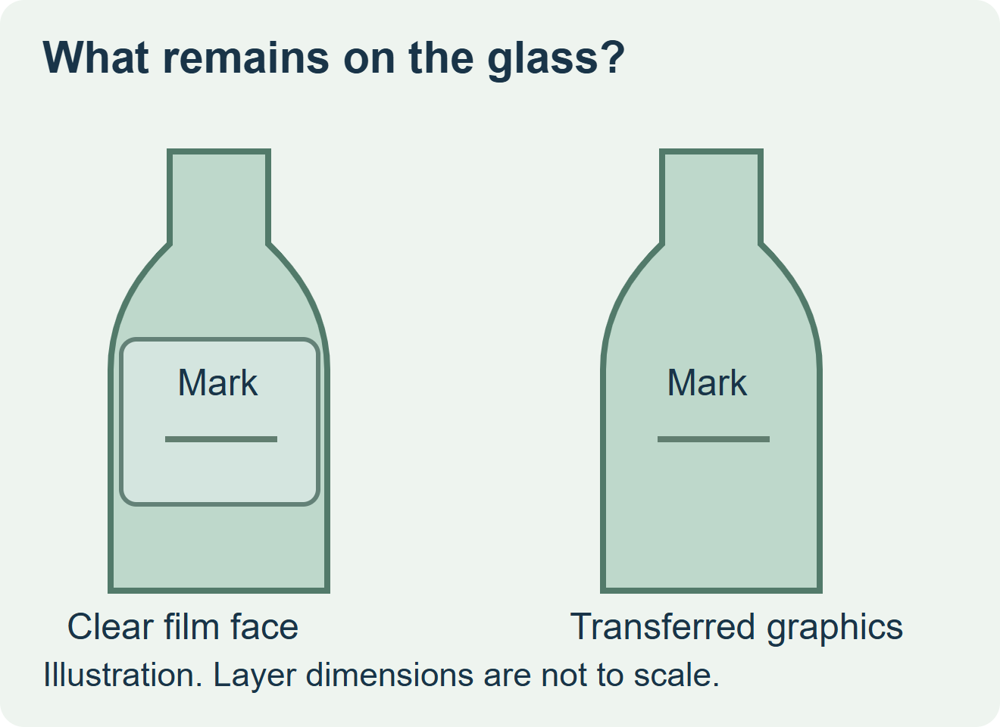
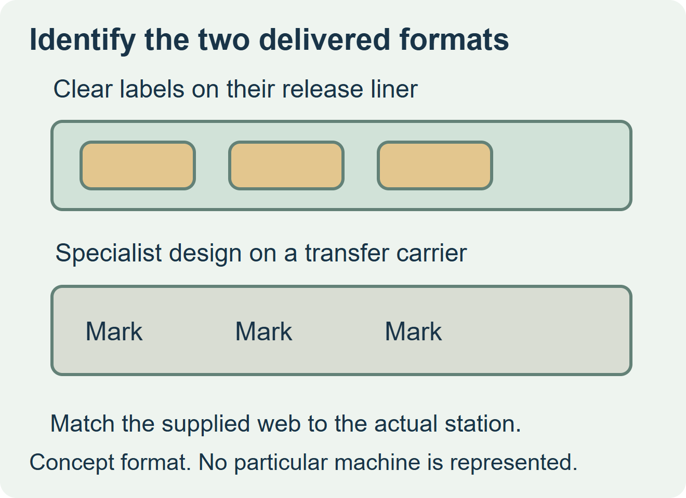

Choose a clear film label if a transparent face around the graphics is acceptable and the qualified label construction fits the line. Compare carrier transfer if the design needs individual graphics without that surrounding label face and a specialist supplier can qualify the complete route. Ask what layers remain on the bottle before comparing appearance or price.


Define the supplied object and the final decoration
A conventional clear pressure-sensitive label has a transparent face carrying its print. The backing releases that label for application. Krones describes INKpression as a different route that transfers a finished design from a carrier to glass in one piece using a modified labeling station. Its example supports asking about a specific system and approved materials. Krones carrier-transfer decoration example
Request a drawing or supplier description identifying the final decorative layers, bonding arrangement and carrier. For the clear-film offer, identify the face, ink, white backing where used, adhesive and finish. Keep quoted thickness values tied to the layers they include. Give the two samples the same intended graphic coverage so the visual comparison is meaningful.
| What the brand needs | Route to investigate | What the offer should identify |
|---|---|---|
| A transparent panel with visible windows around the print | Clear film label on the actual glass | Cut outline, face, backing, ink and finish along with the supported roll. |
| Separated decorative shapes with open glass between them | Specialist carrier-transfer proposal | Transferred layer boundary, carrier format and the supported bottle/application system. |
| Changing vintage, lot or market information | Retained label or another supported coding component | Which fields are late-assigned, where they sit and who applies them. |


Inspect glass and graphics from several angles
Compare actual decorated samples under the intended display light. Look at the window areas, print edges, white backing, small text and glossy or metallic features where present. Rotate the bottle to see adhesive or face visibility on the clear-label proposal and the edge of the transferred decoration on the alternative. A photograph selected from one angle may hide the difference that prompted the RFQ.
For a hypothetical spirits release, a crest and several separated lines form the front design. A clear label could carry the whole layout within one cut outline. A transfer proposal might remove the surrounding face from that view. The purchaser should decide whether the resulting appearance justifies the confirmed preparation, minimums, application and trial work. Use actual offers and decorated samples when making that judgment.
Confirm the route through bottling and service
Include the glass surface reference and any relevant coating, actual application sequence, and expected handling in the sample plan. Ask the system supplier to confirm the installed station and consumables it supports. Inspect the final result after the agreed use route before reusing its approval. Keep transfer capability and services as project-specific requests.
Quote the full accepted decorated bottle. Include carrier or roll supply, preparation, application, production losses as actually agreed, and any remaining label or code. ZFU can review the conventional label component. A specialist transfer system requires its own supplier and bottling confirmation.
Discuss the unresolved label requirement
Send the bottle item and surface, marked graphic islands and background windows, artwork, sample reference, intended equipment, exposure and quantities. Review wine and spirits label options and prepare a label specification inquiry. The contact page opens an email draft and lists email or WhatsApp for attachments. Supply, proof options, testing, pricing and timing require project confirmation.